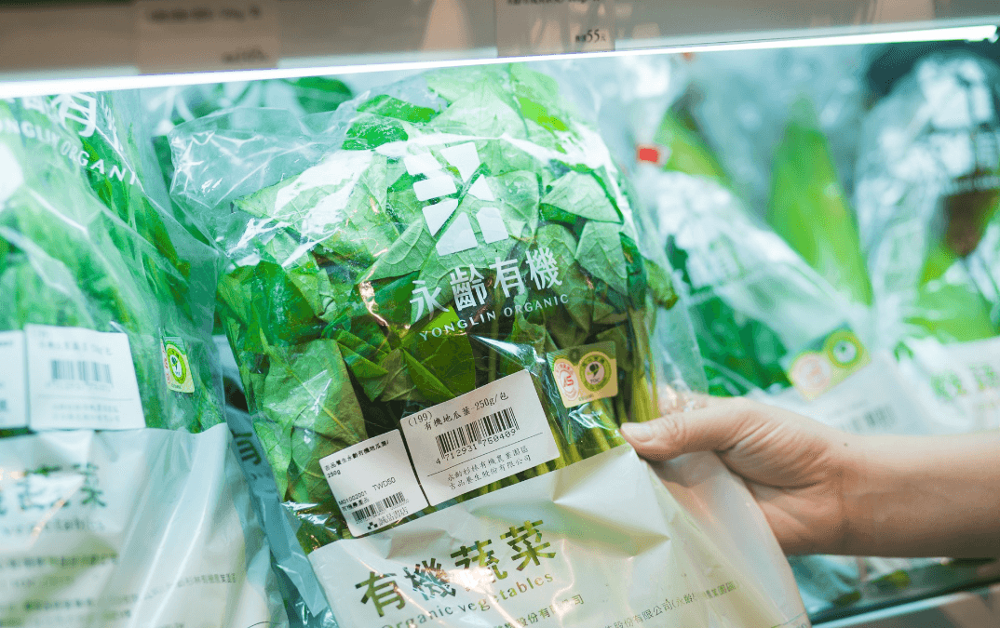

共好未來
從此發生

永續農業
荒蕪到新芽，生態工法建設讓士地生生不息
溝通經過風雨摧殘的大地，如何在發展農業經濟底下，仍然維持生態的多樣性。維持一定的開發比例，保留土地的原貌，留下大自然最美的禮物。
閱讀全文

責任生產
讓有機不稀有，無毒栽種技術發展，大幅降低有機栽種成本
透過無毒栽種與系統化的管理制度，大幅降低有機種植成本。計畫性的技術公開與輔導，讓更多農民能以無毒種植產出作物，直接降低對土地的傷害...
閱讀全文
智慧農業
農業升級轉型，智能科技入主後的新農經濟
投入科技與數位化轉型，深入農業每個階段，簡化作業時間，控制品質。整合資訊與技術，建立農作管控平台，使農業更精緻化。
閱讀全文
農才培育
傳承經驗與技術，轉化知識發展專業農才
將過去十年的經驗，轉化為知識，培育農業專業領域人才。分級訓練，根據各階段重點，傳承知識與實務，讓專業綿延，持續在地方與產業發展可能。
閱讀全文
地方創生
創造地方經濟回春的肥料，農食教育觀光正夯
除永齡農場經營模式，農食教育推廣與觀光帶動地方經濟與繁榮。結盟眾多地方產業，共同推廣農食山城，企圖以觀光聚落模式，帶動地方繁榮。
閱讀全文